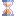

| Constellation Action | Keyboard Shortcut | User Action | Menu Icon |
|---|---|---|---|
| Open Timeline | Ctrl + Shift + T | Views -> Timeline |

|
If the graph that you are currently analysing contains temporal data on its transactions, it can be viewed using the Timeline View. The Timeline will plot the data from the graph relative to its occurrence in time.
When timeline events overlap at the current zoom level, these events are grouped into a temporal cluster. These clusters are represented as rectangular blocks on the timeline. They are coloured blue if none of the events in the cluster are selected and red if all of the events in the cluster are selected. If only a portion of events in the cluster are selected, the block will be both red and blue with the proportion of red matching the ratio of selected / unselected.
If the Timeline is zoomed in, this large temporal cluster will 'break' into smaller temporal clusters and potentially distinct events. (This effect can be seen in the image below.)
A distinct event is represented as (from top to bottom):
If any of the elements (nodes or transaction) are selected on the graph, they will be shown with a red 'glow'. Clicking on any of these elements will select it on the graph, and if the 'Control' button is pressed while a selection is performed, it will be added to the currently selected elements on the graph.
Excluded nodes are nodes that are not visible in the current range of the timeline. The excluded nodes drop-down list at the top of the view provides three options for how excluded nodes should be visualised on the graph: Show Excluded Nodes, Dim Excluded Nodes, and Hide Excluded Nodes.
When the "Show selected only" toggle button is pressed, the timeline to only show transactions that are selected on the graph.
When the "Zoom to Selection" button is pressed, the timeline will zoom and pan to the smallest time period that includes everything that is selected.
If the "Show Node Labels" toggle button is pressed and a node attribute selected (from the resulting drop-down), then labels will be shown next to nodes where there is data present. This can be useful for quickly identifying nodes, or showing an interesting attribute.
If the middle button or the secondary button on the mouse is pressed and held above the Timeline, and the mouse dragged, the Timeline Window will refresh the beginning and end times relative to the movement of the mouse.
If the mouse wheel is scrolled, the Timeline Window will increase or decrease the amount of time covered by the Timeline Window relative to the scroll direction.
Clicking on the Timeline window with the primary mouse button and dragging will cause a selection rectangle to be created. Any events under the selection rectangle upon release will be selected on the graph.
If the primary mouse button is clicked and dragged over the point of view rectangle of the Overview Panel, the time period shown by the Timeline Window updates to reflect the position of the point of view rectangle.
If the primary mouse button is clicked and dragged at the edges of the point of view rectangle, the time period shown by the Timeline Window updates to reflect the position of the point of view rectangle.
The Overview Panel can be resized by clicking and dragging the white portion that separates the timeline window and the overview panel (the arrowhead should change when you are hovering over the white portion).